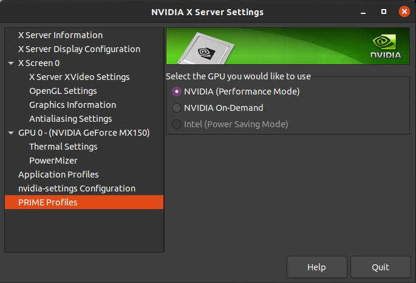

Veelvoorkomende problemen
WiFi
RTL8821CE
Er is een DKMS-driver beschikbaar (rtl8821ce-dkms). Deze is beschikbaar op USB bij de BYOD-dag.
De informatie hieronder is niet relevant als de Ubuntu-package rtl8821ce-dkms geïnstalleerd wordt; deze blacklist rtw88_8821ce automatisch.
Kernel >=5.9 bevat een kapotte rtw88-module die slechte ondersteuning voor de 8821ce biedt; deze moet geblacklist worden in /etc/modprobe.d/blacklist.conf:
blacklist rtw88_8821ce
Zet de laptop uit en weer aan, als het goed is wordt dan de rtl8821ce-driver geladen.
RTL 8168 / 8169 / 8101 / 8111
Het kan zijn dat deze chipsets niet goed werken met dual boot. De Windows driver schakelt namelijk de netwerkkaart uit bij het afsluiten, en daar kan de Linux driver niet mee omgaan.
Wake-On-Lan aanzetten binnen Windows zou dit probleem moeten oplossen. Deze optie kun je vinden in device manager bij de netwerkkaart.
Je kan ook de laptop volledig uitzetten, een tijdje wachten (~10 sec), en weer opstarten.
Meer informatie: https://en.opensuse.org/SDB:Realtek_8169_driver_problem
Wi-Fi werkt alleen bij opnieuw opstarten vanuit Windows
Als Wi-Fi alleen werkt na het opnieuw opstarten vanuit Windows, en dus niet bij het afsluiten en opstarten, controleer eerst of fast startup wel uit staat. Het niet netjes afsluiten binnen Windows kan namelijk de netwerkkaart in een staat laten waar de Linux driver niet mee om kan gaan. Instructies hiervoor vindt je hier.
Atheros wifi kaart werkt niet
- Check dmesg of his zoekt naar bepaalde firmware blobs
- Bestaan deze niet kan deze gedownload worden van https://github.com/kvalo/ath10k-firmware
AIC8800 USB-wifiadapters
Ook bekend onder de merknaam BrosTrend. Er is een out-of-tree driver op hun site.
usb_modeswitch
Sommige USB-wifiadapters doen zich voor als USB-stick met drivers. Met usb_modeswitch kan je mogelijk wisselen van USB-modus. Als het goed is doet de driver dit voor je als je een driver geïnstalleerd hebt, maar het kan handig zijn om het handmatig te doen om erachter te komen welke wifi-adapter het is.
Graphics
Kan NVIDIA GPU niet uitschakelen via GUI

Schakel via de command line interface:
sudo prime-select intel
Boot niet met Nvidia GPU
Booten met nomodeset als kernel argument en switchen naar de Nvidia driver ipv open source driver:
- Tijdens het opstarten in GRUB waar de
Ubuntuentry geselecteerd staat, druk ope. - Navigeer met pijltjestoetsen naar de regel
GRUB_CMDLINE_LINUX_DEFAULTen voegnomodesettoe aan de lijst van kernel parameters. Dit wordt dus bijvoorbeeldGRUB_CMDLINE_LINUX_DEFAULT="quiet splash nomodeset" - Als Ubuntu opgestart is, open een terminal (Ctrl+Alt+T) en typ
apt list 'nvidia-driver-*' - Kies de hoogste nvidia driver versie en installeer deze, bijvoorbeeld
sudo apt install nvidia-driver-510 - Start opnieuw op
Flickering met AMD GPU tijdens installer
Reboot en kies Ubuntu (safe graphics) in GRUB.
Beeldscherm flikkered
Mogelijk dat de PSR van het panel stuk is, boot met (intel cpus) i915.enable_psr=0 om te kijken of PSR het issue is.
Overig
Acer laptops secure boot
Secure boot kun je niet uitzetten als je geen wachtwoord op de BIOS hebt staan.
Synaptics-touchpad werkt matig / hapert
Paradoxaal kan het verwijderen van de xserver-xorg-input-synaptics-package voor verbetering zorgen; de nieuwere libinput-driver wordt dan gebruikt.
Intel RST / Disk in RAID-modus / Linux ziet de disk niet
Versleuteling
Controleer eerst goed of je BitLocker uit hebt staan!
Inloggen in safe mode
In safe mode moet ingelogd worden zonder Windows Hello, dus men moet het wachtwoord van hun Microsoft-account (of lokaal account, als ze dat hebben) kennen!
Optane / RAID
De optie heet vaak "RAID" ook al gaat het om een enkele disk. Sommige laptops gebruiken wel echt RAID of tiered-storage. Bijvoorbeeld, een kleine Intel Optane disk voor het versnellen van een grotere SSD/HDD. In dit geval kan het uitzetten van RST ertoe leiden dat je data volledig onleesbaar wordt. Zorg dat je een goede backup hebt (in dit geval op file of filesystem niveau, niet op block niveau!).
We raden je aan om hulp te vragen bij deze stappen, tenzij je zelf écht weet wat je doet. Anders is het een goede manier om je backups te testen.
- Start windows op en open een opdrachtprompt (cmd) als administrator
- Voer
bcdedit /set {current} safeboot minimaluit - Reboot naar de UEFI-instellingen. Verander hier de modus van RAID naar AHCI (als de optie hiervoor onzichtbaar is, kan het nodig zijn om Ctrl-S in te drukken terwijl de ''main tab'' van de bios setup zichtbaar is. Dit is vaak zo bij Acer.). Bij Dell staat het onder System Configuration > SATA Operation > AHCI.
- Boot Windows weer, start weer een opdrachtprompt op als administrator en voer het volgende uit
bcdedit /deletevalue {current} safeboot - Nu zou de Linux-installer de disk wel moeten herkennen.
Bitlocker staat aan
Zie het artikel over BitLocker.
Screen rotation
- Makkelijkst is om gewoon de iio-sensor-proxy service uit te zetten via systemctl.
- Some asus flip books have a motion sensor to rotate the display, this is off by 90 degrees.
- See https://gitlab.freedesktop.org/hadess/iio-sensor-proxy/#accelerometer-orientation to add the current orientation in the config file and reboot.
- Waardes zijn een 3x3 rotatie matrix die de gegevens mappen naar de daadwerkelijke scherm positie, als 1 as verkeer is -1, is het scherm gedraaid, x en y omdraaien, etc.
xrandr --output $(xrandr | grep -w connected | cut -f1 -d' ') --rotate normal
Toetsenbord werkt niet
Bij de yoga slim 7 pro 14IHU5 werkte het volgende:
i8042.direct i8042.dumbkbdkernel parameters toevoegen aanGRUB_CMDLINE_LINUX_DEFAULTin/etc/default/grubdaarnasudo update-grub
Native Command Queueing (NCQ)
Native Command Queuing (NCQ) is een techniek die de lees- en schrijfcommando's van en naar de hardeschijf optimaliseert. Er zijn echter SSD's die dit niet ondersteunen en waar Linux toch deze techniek probeert toe te passen. Je merkt vrijwel meteen wanneer dit het geval is: Ubuntu zal bevriezen tijdens het opstarten, zowel bij de live-cd als na een installatie op de harde schijf.
Eenmalig uitschakelen
Om NCQ eenmalig uit te schakelen, bijvoorbeeld om de live-cd op te starten of om te booten zodat een definitieve uitschakeling kan worden volbracht, volg de volgende stappen:
- Toets 'e' in als het GRUB opstartmenu zich toont, er opent zich een editor.
- Voeg aan
GRUB_CMDLINE_LINUX_DEFAULThet volgende toe: "libata.force=noncq". - Druk op F10 om Linux op te starten.
Permanent uitschakelen
Verander nu hetzelfde in /etc/default/grub en voer sudo update-grub uit om de wijzigingen door te voeren.
Firefox installeren als deb in plaats van snap
sudo nano /etc/apt/preferences.d/firefox-no-snap
Package: firefox*
Pin: release o=Ubuntu*
Pin-Priority: -1
sudo apt remove firefox
sudo snap remove firefox
sudo add-apt-repository ppa:mozillateam/ppa
sudo apt install firefox
Tijd is verkeerd in Windows of Linux
Windows gebruikt lokale tijd voor de hardware klok van je laptop terwijl Linux UTC gebruikt. Je kan Linux instellen om lokale tijd te gebruiken, of Windows instellen om UTC tijd te gebruiken. Niet beide opties, dan heb je weer hetzelfde probleem.
Linux kan zich beter aanpassen dan Windows, dus we raden aan voor optie 1 te gaan tenzij je het principieel oneens bent met hoe Windows tijd opslaat.
Optie 1: Linux instellen om lokale tijd te gebruiken
In een terminal:
timedatectl set-local-rtc 1 --adjust-system-clock
Optie 2: Windows instellen om UTC tijd te gebruiken
In registry editor, maak in HKEY_LOCAL_MACHINE\System\CurrentControlSet\Control\TimeZoneInformation een nieuwe DWORD genaamd RealTimeIsUniversal met waarde 1.
HP laptops waarbij RST niet uit kan
Bij sommige nieuwere HP laptops is het niet mogelijk om RST uit te schakelen (dus niet mogelijk om AHCI te gebruiken). Je kan deze laptops herkennen aan "UEFI HII Configuration" in de UEFI. Voor zover wij weten is het niet mogelijk om Linux te installeren op deze laptops.
Is de Windows installatie stuk (zoals BitLocker vergrendeld, zonder recovery key)? Hieronder staan instructies voor het (her)installeren van Windows.
- Maak een USB met Windows
- Ga naar HP driver download en voer het serienummer van de laptop in
- Download de RST storage driver (en niet per ongeluk de HP solution center die HP graag wil dat je download)
- Voer deze exe uit op een Windows (virtuele) machine, en ga door tot de drivers zijn uitgepakt in
C:\SWSetup. Stop daarna direct met de installatie. - Maak een tweede USB stick met FAT32 filesystem
- Verplaats bestanden in
C:\SWSetup\SP...\F6naar de tweede USB stick - Start de Windows installer en probeer Windows te installeren, tot het mis als Windows geen disks kan vinden.
- Steek de tweede USB stick in de computer en probeer de driver te laden met "Load Driver". Staat de USB stick niet in de "Browse" lijst? Open een command prompt (Shift+F10). Nu kun je de USB een letter geven met diskpart.
Schakelen van HWE kernel naar standaard kernel
sudo apt remove linux-generic-hwe-22.04
sudo apt install linux-generic
Reboot nu naar de niet-HWE kernel (via advanced options in GRUB). Als dat werkt, kan je de oude kernel(s) verwijderen. Dit commando helpt bij het vinden van geïnstalleerde kernels:
apt list --installed 'linux*'
Mainline kernel installeren
Mainline kernels worden niet ondersteund door Canonical en zijn unsigned. Zet dus eerst secure boot uit!
Handmatige manier
1. Ga naar de mainline kernel archive
2. Kies de meest recente stabiele versie
3. Download de deb packages via de links onder "Test amd64/build succeeded". Het kan zijn dat er "failed" staat zonder downloadlinks, kies dan een oudere kernel tot je wel downloadlinks kan vinden.
4. Installeer alle debs (bijv. via dpkg -i *.deb)
Via shell script
1. Download het script: wget https://github.com/pimlie/ubuntu-mainline-kernel.sh/raw/master/ubuntu-mainline-kernel.sh
2. Maak executable: chmod +x ubuntu-mainline-kernel.sh
3. Zoek naar kernel versies: ./ubuntu-mainline-kernel.sh -r
4. Installeer een kernel: ./ubuntu-mainline-kernel.sh -i <versie>